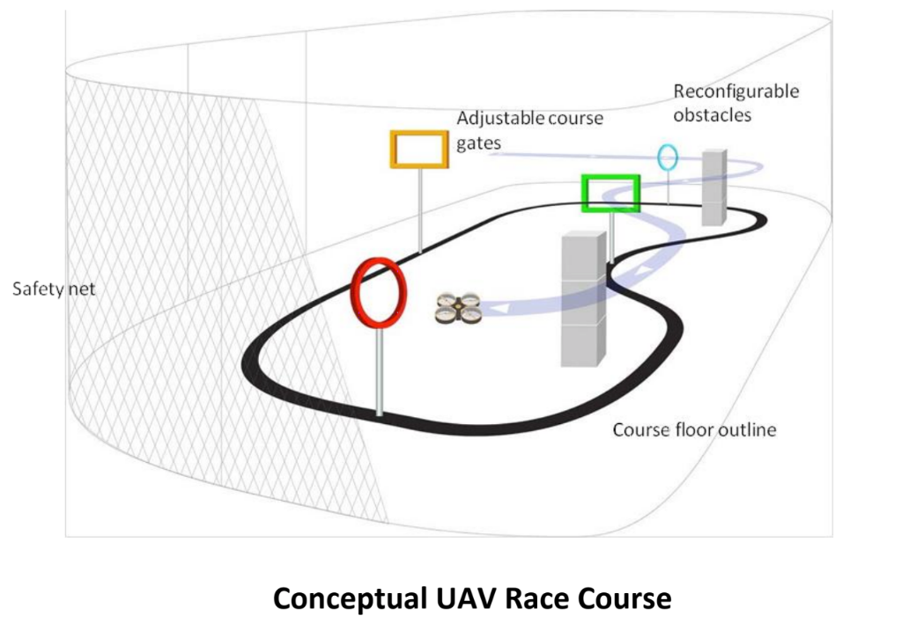

Module 4: Racing Challenges¶
Goal: To take your line following and obstacle avoidance code and link them to create a final challenge solution
Final Challenge Details¶
Our Final Challenge this year will take place in a space the size of a basketball court, so plan on having a lot of space and a lot of gates. Although the space was much smaller last year, you can see a video of last year’s challenge here to get an idea of what the final will be like.
We may have some stretch challenges that, if completed well, will give teams an opportunity to take a “short cut” through a part of the course. Based on how the class progresses, we will introduce these later.

Challenge Rules¶
Note: These rules are made to keep your team and drone safe. If any team is found to be violating these rules, you will lose flight time and potentially be disqualified.
We are implementing a staff-made safety controller to prevent the drone from going too quickly or too high. If any changes are made to this node, or any attempts are made to bypass it, your team will be disqualified.
An Instructor will be handling the RC during the final challenge in case of bugs or crashes, not a member of the drone’s team.
All the normal safety procedures are in play, and will be more strictly enforced because we don’t have a net seperating us from the drones.
Get hype to see all your work come together in front of sponsors, family, and other teams!
Specs¶
We will not have a net around our flight space. Any careening, uncontrolled drones will therefore hit a solid wall, not a net. Keep this in mind and try to make your code as robust as possible. We do not have replacement drones if yours breaks.
Your base flying height (FOR THE FINAL, NOT TESTING IN THE CLASSROOM) should be
1 m, so any obstacles above that height should be avoided by going down, and any above that height should be flown over. This height may change based on our final setup, so we highly recommend making this a global variable that won’t be a hassle to adjust.The displacement height (how far above or below your base height you should fly to avoid obstacles) should be similarly adjustable, but for now aim for a
0.5 mdisplacement (FOR THE FINAL, NOT IN THE CLASSROOM).You may decide as a team how far away from the AR tag you want to begin avoiding at, but we recommend a distance of no less than
0.6 mand no more than1 m.We will be placing gates only on straight-aways, so you will not have to worry about avoiding obstacles while also making sure you don’t lose the line (in other words, going straight over/under obstacles will be a safe option).
Unit 1: Planning¶
An important point to keep in mind for this module is to be careful not to oversimplify this process. Joining line following and obstacle avoidance into one coherent set of code is more difficult than you might think. So, in order to get flight time or any testing materials, like an LED strip, AR tags, or test gates, you must get your plan checked with a TA. Another thing to keep in mind is that we will ask specific members of your team to explain your plan, so make sure everyone is up to speed and can explain your plan well, or you won’t get checked off.
Some Potential Problems to Keep in Mind¶
You do not have to keep following the line while going over/under the gate, but you will have to decide how you will have to figure out how you will switch the drone from line follower mode to obstacle avoidance (which node is publishing velocity commands? Will that change? How?)
While you are switching between nodes and potentially suspending the functionality of one or the other, remember that you cannot use a sleep command (even rospy’s) in the callback function. It can be elsewhere in your code, but it will crash your program if you put it in the callback.
It was pretty easy in the last challenge to create an open-loop obstacle avoidance strategy using time, but for the final challenge, this solution will not be quite so robust. Try to integrate distance-based, closed loop obstacle avoidance for the final (so go forward X meters rather than X seconds).
Criteria¶
Checklist: link
Note: This stage of software development is incredibly important, and a solid plan will save you time and give you more time to be optimizing your solution (faster debugging means more time to get your drone going fast in a robust way, and to work on stretch challenges). This is also a practice that will help you in computer science/engineering classes as well as in professional settings.
Unit 2: Writing the Final Challenge¶
Unit 2 rubric: link
A lot of this part is up to you and your team, based on the plan you made in Unit 1. We want to give you as much freedom as possible to use what you have learned in Modules 1 through 3. That said, we also ask that you stick to solutions that progress through the rubric above. If you do not, we will not penalize you, but the TAs and instructors will have a much harder time helping you. If you are too far from what we are expecting, we might not be able to help much at all.